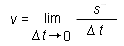

The instantaneous speed of a mass point at a given instant is approximated by the average speed over a short time interval containing the given instant. If one takes shorter and shorter time intervals, always embracing the given instant, shrinking in size to zero duration, then the limiting value of the average speed is called the speed at the given instant.
The symbol for speed is v. The SI-unit of speed is m/s.
Definition of speed in symbols:

In this definition, Δt denotes the duration of a time interval containing the given instant and s denotes the distance traveled by the mass point during this time interval.
The terms speed and instantaneous speed are used interchangeably. Most of the time one just says 'speed'.